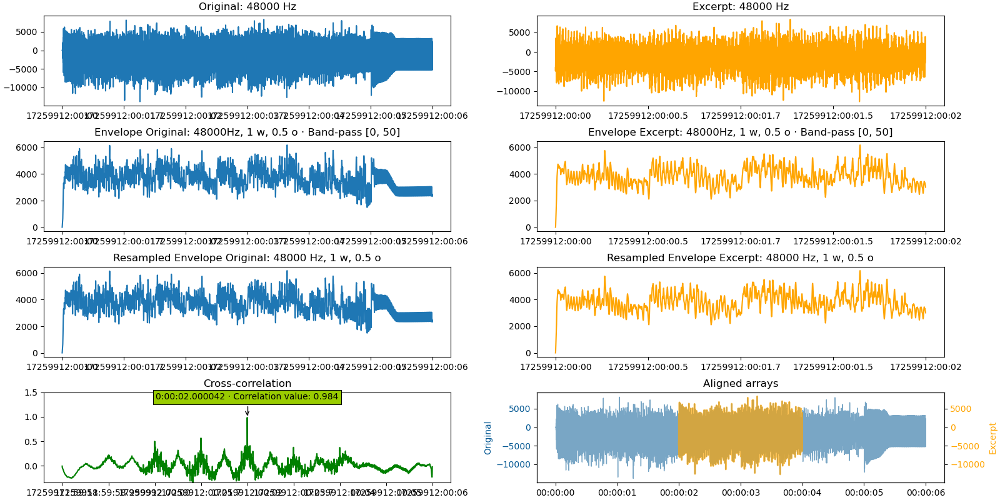

Find the delay between two audio files
Since version 2.11, it is possible to directly find the delay between audio files by just setting the path to the audio files as parameters to the find_delay function:
delay = find_delay("audio_file.wav", "excerpt.wav")
By default, only putting these two parameters will work and return a delay in samples of "audio_file.wav".
Mono/stereo files
If the audio files are in stereo (or more channels), the function will automatically run the cross-correlation on
the first channel for both files. This can be manually set via the parameter mono_channel, where it can be set
on an integer (default 0), or on "average" to average the samples across all channels.
delay = find_delay("audio_file.wav", "excerpt.wav", mono_channel="average")
This parameter applies to all the audio files - in the case where you want to select different channels between the audio file and the excerpt, select the channel you need beforehand.
from scipy import wavfile
wav_full = wavfile.read("audio_file.wav")
wav_full_freq = wav_full[0]
wav_full_array = wav_full[1][:, 0] # Get the first channel
wav_excerpt = wavfile.read("audio_file.wav")
wav_excerpt_freq = wav_excerpt[0]
wav_excerpt_array = wav_excerpt[1][:, 1] # Get the second channel
# As we pass the arrays only, we now need to specify the frequency
delay = find_delay(wav_full_array, wav_excerpt_array, wav_full_freq, wav_excerpt_freq)
Audio files with different frequencies
Audio files with different frequencies need to undergo resampling. The parameters controlling the resampling are
resampling_rate, window_size_res, overlap_ratio_res, and resampling_mode.
If resampling_rate is set on "auto" (default), the function will automatically try to perform the resampling at
the lowest frequency of the two arrays. For example, with an original file sampled at 48000 Hz and an excerpt sampled
at 44100 Hz, the function will resample the original file at 44100 Hz before calculating the delay. Then, the returned
delay will be converted to return the appropriate sample value at the original sampling of 48000 Hz.
delay = find_delay("audio_file.wav", "excerpt.wav", resampling_rate="auto")
It is also possible to manually set the resampling rate to a lower value, such as 10000 Hz. Note that the lower the resampling rate, the lesser accurate the result will be. As the cross-correlation relies on the envelopes of the audio files, setting a resampling rate to a value lower than 1000 Hz may not allow to detect any correlation.
delay = find_delay("audio_file.wav", "excerpt.wav", resampling_rate=10000)
In order to reduce the memory load and to accelerate the calculations, the function also offers to cut the large
arrays into windows with overlaps, perform the resampling on these windows, then glue these windows together. The
parameter window_size_res allows to set the size of the windows, while overlap_ratio_res sets the overlap.
The default values for these parameters (window size of 1 million samples and overlap of 50 ̀%) allow to significantly
speed up the computation, with a negligible trade-off in accuracy. These parameters should be tweaked cautiously,
and only for very large files.
delay = find_delay("audio_file.wav", "excerpt.wav",
resampling_rate=10000, window_size_res=1e6, overlap_ratio_res=0.5)
Finally, the parameter resampling_mode defines the numpy or scipy method to resample the data. By default,
the CubicSpline method
is selected, but other methods might come relevant for different use-cases.
delay = find_delay("audio_file.wav", "excerpt.wav",
resampling_rate=10000, resampling_mode="cubic")
Compute the envelope for audio files
It is recommended to calculate the envelope of audio files (parameter compute_envelope - defaults to True). Two
more parameters, window_size_env and overlap_ratio_env allow to cut big audio arrays into windows, in a similar
fashion as for the resampling (see previous paragraph). The default value of these parameters are of 10 million samples
and an overlap of 50% - and, just like for the resampling, these values allow to significantly speed up the computation,
with a negligible trade-off in accuracy.
delay = find_delay("audio_file.wav", "excerpt.wav",
compute_envelope=True, window_size_env=1e7, overlap_ratio_env=0.5)
Finally, it is also recommended to apply a low-pass filter on the audio arrays - filter_below has a default value
of 50 Hz, which should work fine in most cases. It is possible to refine the filter by defining a lower cut
(filter_above, default to None).
Return the delay in seconds
By default, the find_delay function returns the delay in number of samples. It is possible to set the delay
return format using return_delay_format. For example, for files sampled at 48000 Hz and a delay
found at exactly 1 second, the different methods will return the following values:
delay = find_delay("audio_file.wav", "excerpt.wav", return_delay_format="index") # Returns 48000
delay = find_delay("audio_file.wav", "excerpt.wav", return_delay_format="s") # Returns 1
delay = find_delay("audio_file.wav", "excerpt.wav", return_delay_format="ms") # Returns 1000
delay = find_delay("audio_file.wav", "excerpt.wav", return_delay_format="timedelta") # Returns datetime.timedelta(seconds=1)
Plot the delay
find_delay offers a way to visualize the delay calculation. The relevant parameters are plot_figure,
plot_intermediate_steps, x_format_figure, path_figure, name_array_1, name_array_2, and
dark_theme.
plot_figurewill define if to show the figure or not.plot_intermediate_stepswill define if to show the results of the resampling and the envelope calculations (if they were calculated).x_format_figurewill define the format of the values on the x-axis (if set on"auto", the format will be controlled by the value of the parameterreturn_delay_format.path_figure, if defined, will define the path where to save the figure.name_array_1andname_array_2will define the names of the two arrays on the figure.dark_modedefines if the figure should appear in dark theme or not.
delay = find_delay("audio_file.wav", "excerpt.wav",
plot_figure=True, plot_intermediate_steps=True,
x_format_figure="time", path_figure="figures/figure.png",
name_array_1="Original", name_array_2="Excerpt", dark_mode=False)
The resulting figure:
